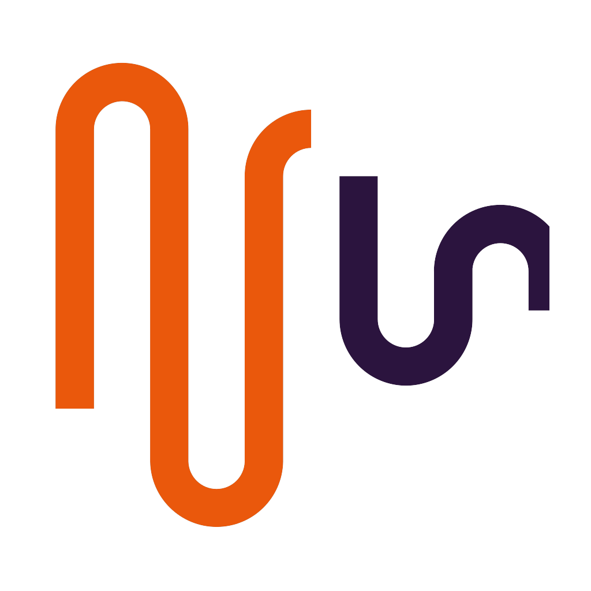
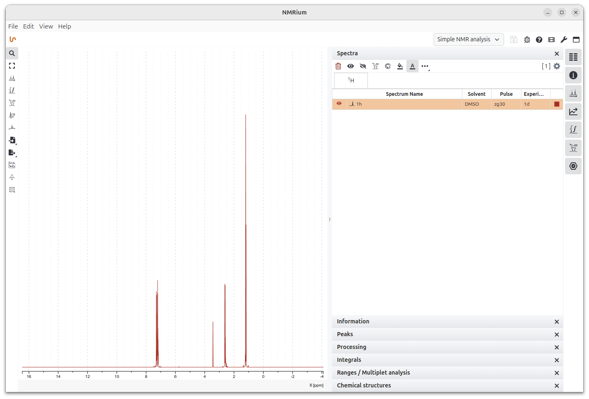
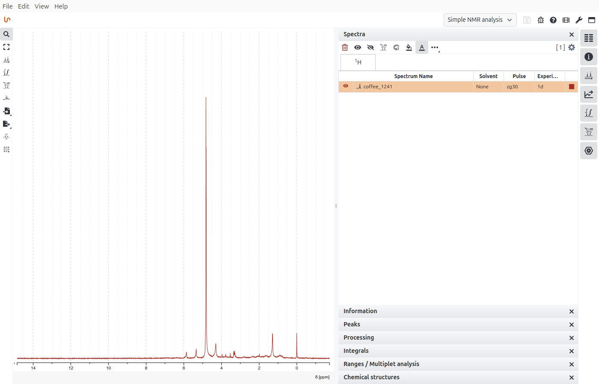
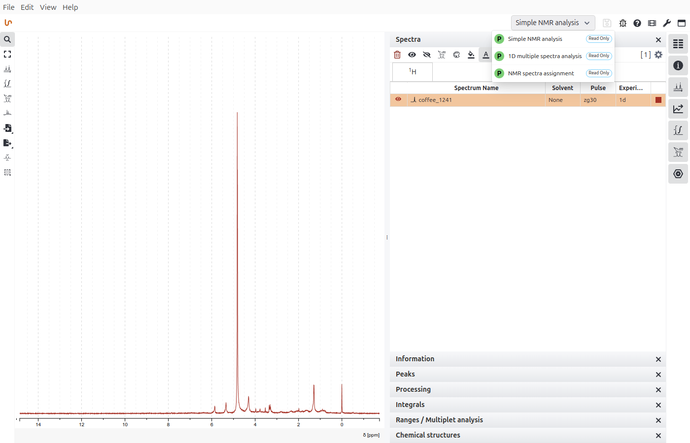
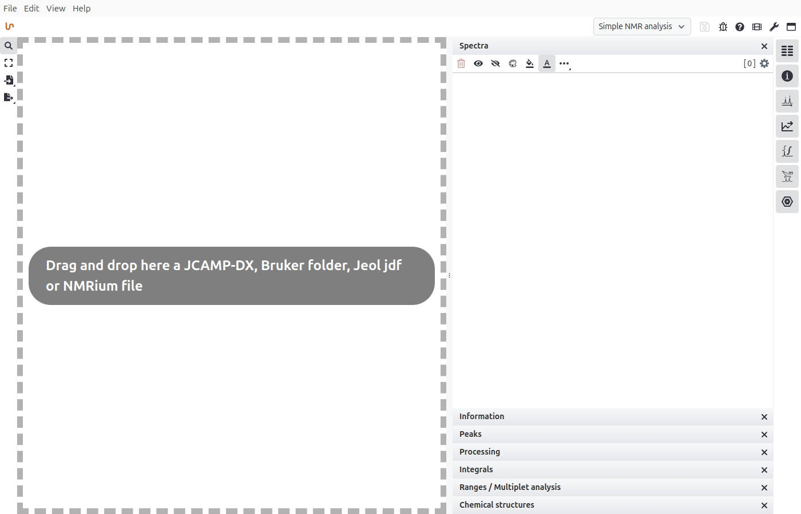

NMRium DesktopNMRium Desktop wraps Zakodium/cheminfo's open-source NMRium viewer in a native app. Open, process, and assign NMR spectra fully offline — no browser, no server, no setup.
Free & open source, MIT — for Linux, Windows, and macOS

All the processing power of the web-based NMRium viewer, packaged so chemists who don't want a browser tab or an install-and-pray PWA flow can just double-click and open a spectrum.
Real Open/Save dialogs and .dx/.jdx file associations — double-click a spectrum to open it.
Bruker, JEOL, and Varian/Agilent import, alongside JCAMP-DX — not just one file type.
Auto-phase correction, five baseline algorithms, linear prediction, and Levenberg-Marquardt peak fitting.
Structure-based 1D/2D prediction (¹H, ¹³C, COSY, HSQC, HMBC) plus a full spin-system simulator.
Bring in a .mol/.sdf structure (e.g. from Ketcher) for atom-to-peak assignment.
Switch between Default, 1D Processing, Prediction, Assignment, Simulation, and more.
No server, no browser install flow — your spectra and files never leave your machine.
Built from NMRium's own pinned source — same processing and rendering logic, no forks.
A few corners of the app, straight from a real running build.

Double-click a file, or pass it on launch — it's on screen in seconds.

Jump between curated NMRium workspaces from a native dropdown.

JCAMP-DX, Bruker folders, JEOL jdf, or a saved .nmrium archive — drag, drop, done.
Pick your platform. Builds are currently unsigned, so expect a SmartScreen or Gatekeeper warning on first launch.
All installers are published on the GitHub Releases page. Optional sample/teaching data ships as a separate companion package — see the README.
NMRium Desktop is a desktop spectrum viewer, lovingly built on top of NMRium, the excellent open-source NMR processing component built and maintained by Zakodium/cheminfo, with EU Horizon 2020 grant funding.
All of the actual chemistry — processing, prediction, assignment, rendering — is NMRium, built from its own pinned source, unmodified. This project just makes it installable, offline, and file-association-friendly for chemists who'd rather not run a browser tab.
Thank you to the Zakodium/cheminfo team for building and open-sourcing NMRium under the MIT license. Bug reports, ideas, and contributions are always welcome.